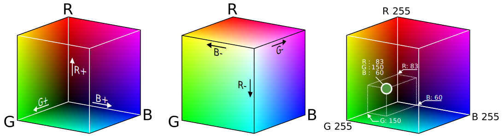
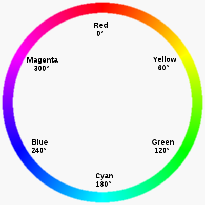
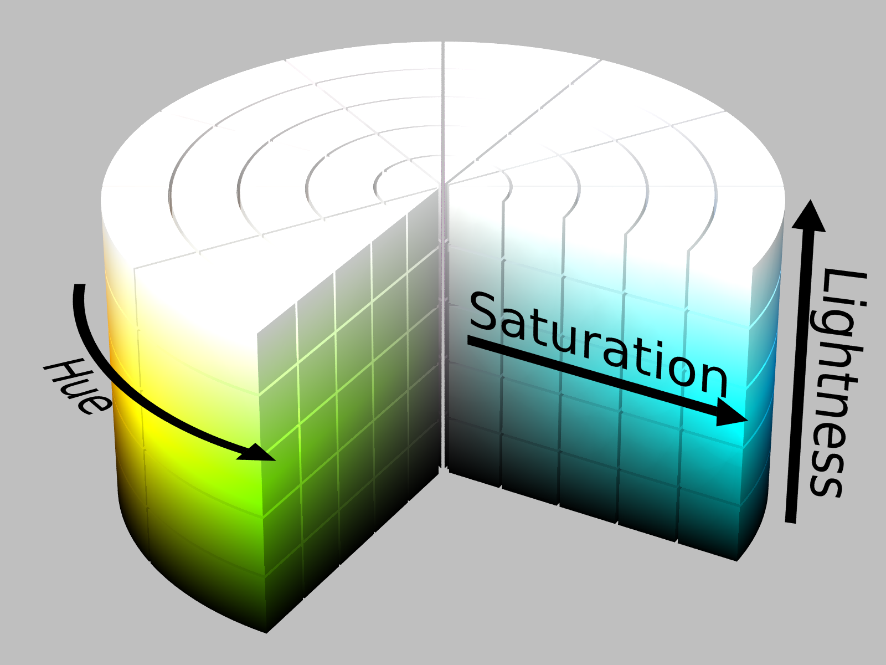

Grafik im WWW
Farbmodelle (Farbräume)
Farbmodelle sind Beschreibungssysteme um unterschiedliche Farben über Koordinaten zu definieren. Farbmodelle nutzen meist ein dreidimensionales Koordinatensystem (Farbraum) zur Beschreibung. Wichtige Farbmodelle für die Arbeit mit HTML und CSS sind RGB und HSL.
RGB-Farbraum
Der RGB Farbraum definiert Farben über die Mischung von den Farbkanälen Rot, Grün und Blau. Jeder dieser 3 Farbkanäle kann dabei einen unterschiedlichen Intensitätswert aufweisen.
Über die Farbtiefe wird bestimmt wieviele unterschiedliche Intensitätswerte ein Farbkanal aufweisen kann. Letztlich wird damit definiert wieviel unterschieldiche Farben dargestellt werden können. Gängig ist eine Farbtiefe von 24 Bit, welche für jeden Farbkanal 8 Bit bereitstellt (0-255 je Farbkanal). Mit der 24 Bit Farbtiefe können 16.777.216 Farben dargestellt werden.
Im Bild wird der RGB-Farbraum als dreidimensionaler Würfel dargestellt:

Als gängige und kompakte Darstellung eines Farbwertes im RGB Farbraum wird das Hexadezimalsystem verwendet. In der Tabelle werden die 8 Ecken des RGB-Farbwürfels angegeben:
| Farbe | RGB-Hex | RGB-Dezimal | |
|---|---|---|---|
| Rot | #FF0000 | rgb(255, 0, 0) | |
| Grün | #00FF00 | rgb(0, 255, 0) | |
| Blau | #0000FF | rgb(0, 0, 255) | |
| Magenta | #FF00FF | rgb(255, 0, 255) | |
| Gelb | #FFFF00 | rgb(255, 255, 0) | |
| Cyan | #00FFFF | rgb(255, 255, 0) | |
| Weiß | #FFFFFF | rgb(255, 255, 255) | |
| Schwarz | #000000 | rgb(0, 0, 0) |
HSL-Farbraum
Der HSL-Farbraum ist für Menschen intuitiver als der RGB-Farbraum. Die von Menschen als grundlegend empfundenen Eigenschafen bzw. Merkmale einer Farbe sind der Farbton (Hue), die Sättigung (Saturation) und die Helligkeit (Lightness). Der HSL-Farbraum ist diesem Phänomen nachgebildet.
Der Farbton bewegt sich entlang des Farbkreises und wird in Grad angegeben (zwischen 0° und 360°):

Die Helligkeit sowie die Sättigung werden in Prozent angegegben. Die Helligkeit bewegt sich zwischen 0% (Schwarz) und 100% (Weiß). Die Sättigung bewegt sich zwischen 0% (reines Grau) und 100% (reiner Farbton). Die Details dazu werden unten noch genauer beschrieben.
Im Bild wird der HSL-Farbraum als dreidimensionaler Zylinder dargestellt:

Ein HSL-Farbwert wird in der funktionalen Notation angegeben. In der Tabelle werden Farben entlang des Farbkreises angegeben bzw. enbenso die Farben Schwarz und Weiß:
| Farbe | RGB-Hex | HSL | |
|---|---|---|---|
| Rot | #FF0000 | hsl(0, 100%, 50%) | |
| Grün | #00FF00 | hsl(120, 100%, 50%) | |
| Blau | #0000FF | hsl(240, 100%, 50%) | |
| Magenta | #FF00FF | hsl(300, 100%, 50%) | |
| Gelb | #FFFF00 | hsl(60, 100%, 50%) | |
| Cyan | #00FFFF | hsl(180, 100%, 50%) | |
| Weiß | #FFFFFF | hsl(0, 0%, 100%) | |
| Schwarz | #000000 | hsl(0, 0%, 0%) |
Navigation im Farbraum
Sättigung (Saturation)
Die Sättigung einer Farbe entspricht ihrem "Reinheitsgrad". Eine 100% gesättigte Farbe ist eine sog. reine Farbe (vgl. Spektralfarben). Die Abnahme der Sättigung (Entsättigung) ist gleichbedeutend mit der Erhöhung des "Grauanteils" in der Farbe. Eine vollkommen entsättigte Farbe (0% Sättigung) würde einem reinen Grauton entsprechen.
| Sättigungs-Intensität | RGB-Hex | RGB-Dezimal | HSL | |
|---|---|---|---|---|
| 100% | #FF0000 | rgb(255, 0, 0) | hsl(0, 100%, 50%) | |
| 80% | #E61919 | rgb(230, 25, 25) | hsl(0, 80%, 50%) | |
| 60% | #CC3333 | rgb(204, 51, 51) | hsl(0, 60%, 50%) | |
| 40% | #B34D4D | rgb(179, 77, 77) | hsl(0, 40%, 50%) | |
| 20% | #996666 | rgb(153, 102, 102) | hsl(0, 20%, 50%) | |
| 0% | #808080 | rgb(128, 128, 128) | hsl(0, 0%, 50%) |
Helligkeit (Lightness)
Um einen Farbwert heller zu machen muss der Weißanteil erhöht werden. Um einen Farbwert dunkler zu machen muss der Schwarzanteil erhöht werden. Dabei ist 100% Helligkeit gleichzusetzen mit Weiß und 0% Helligkeit gleichzusetzen mit Schwarz.
| Helligkeits-Intensität | RGB-Hex | RGB-Dezimal | HSL | |
|---|---|---|---|---|
| 100% | #FFFFFF | rgb(255, 255, 255) | hsl(0, 100%, 100%) | |
| 90% | #FFCCCC | rgb(255, 204, 204) | hsl(0, 100%, 90%) | |
| 80% | #FF9999 | rgb(255, 153, 153) | hsl(0, 100%, 80%) | |
| 70% | #FF6666 | rgb(255, 102, 102) | hsl(0, 100%, 70%) | |
| 60% | #FF3333 | rgb(255, 51, 51) | hsl(0, 100%, 60%) | |
| 50% | #FF0000 | rgb(255, 0, 0) | hsl(0, 100%, 50%) | |
| 40% | #CC0000 | rgb(204, 0, 0) | hsl(0, 100%, 40%) | |
| 30% | #990000 | rgb(153, 0, 0) | hsl(0, 100%, 30%) | |
| 20% | #660000 | rgb(102, 0, 0) | hsl(0, 100%, 20%) | |
| 10% | #330000 | rgb(51, 0, 0) | hsl(0, 100%, 10%) | |
| 0% | #000000 | rgb(0, 0, 0) | hsl(0, 100%, 0%) |
Rastergrafiken
Rastergrafiken definieren ein zweidimensionales Raster über Zeilen und Spalten. Jeder Punkt im Raster (Pixel genannt) wird über einen Farbwert spezifiziert.
Eine Rastergrafik mit der Abmessung 24x24 (Breite x Höhe) benötigt 576 Pixel. Bei einer Farbtiefe von 24 Bit wird je Farbkanal 8 Bit verwendet. Für 576 Pixel werden 13.824 Bit Speicher benötigt. Die Größe einer Rastergrafik setzt sich demnach aus der Farbtiefe und der Abmessung zusammen.
Rastergrafiken werden primär für Fotografien eingesetzt. JPG, PNG und GIF sind gängige Formate für Rastergrafiken im WWW.
Eigenschaften von Rastergrafiken:
- Da für eine Rastergrafik jeder Bildpunkt spezifiziert werden muss, resultiert dies in einem
hohen Speicherbedarf. Für Rastergrafiken sind deshalb unterschiedliche Komprimierungsverfahren spezifiziert worden (ZB JPEG). - Bei der Repräsentation von geometrischen Figuren (zB Buchstaben) innerhalb einer Rastergrafik kommt es zum sog. Treppeneffekt. Mittels der Technik
Antialiasingkann dieser Effekt ausgeglichen werden. - Das Skalieren (oder sonstige geometrische Transformationen) von Rastergrafiken führt zu unschönen Effekten. Diese Effekte lassen sich durch Techniken der
Interpolationteilweise ausgleichen.
Vektorgrafiken
Vektorgrafiken werden aus einer Kombination unterschiedlicher geometrischer Primitiven (zB Kreis, Linie, Polygon) definiert. Neben der Primitive können auch grafische Eigenschaften wie zB die Strichstärke, Farben, Farbverläufe oder Füllmuster definiert werden.
Vektorgrafiken werden für Logos, Zeichnungen oder Illustrationen eingesetzt. SVG ist ein gängiges Format für Vektorgrafiken im WWW.
Eigenschaften von Vektorgrafiken:
- Die Vektorgrafik besteht nicht aus im Raster ausgerichteten Bildpunkten sondern aus einer Beschreibung (bei SVG in XML). Diese Beschreibung muss vor der Darstellung verarbeitet und gerendert werden, dies kann bei komplexeren Grafiken die Ladezeit beeinträchtigen.
- Vektorgrafiken lassen sich verlustfrei skalieren und transformieren.
- Es gibt Algorithmen um aus Rastergrafiken Vektorgrafiken zu erzeugen. Für komplexere Bilder ist manuelle Nachbearbeitung notwendig.
SVG
SVG kann (inkl. XML Beschreibung) beliebig in Webseiten integriert werden. Zum Styling kann CSS verwendet werden.
Im folgenden Beispiel wird ein blaues Rechteck mit schwarzem Rand gezeichnet. Für gemoetrische Figuren gibt es eigene Tags, wie zB rect für Rechtecke. Jedes Objekt kann über width und height in den Abmessungen definiert werden. Die Style-Eigenschaften des geometrischen Objekts werden in CSS definiert und über das style Attribut festgelegt.
<svg> <rect width="300" height="100" style="fill:rgb(0,0,255);stroke-width:3;stroke:rgb(0,0,0)" /> </svg>
Das Ergebnis sieht folgendermaßen aus:
Es können noch weitere geometrische Objekte in die SVG-Grafik eingefügt werden. Im folgenden Beispiel sollen zwei rote Kreise mit einem Radius von 40 eingefügt werden.
<svg> <rect width="300" height="100" style="fill:rgb(0,0,255);stroke-width:3;stroke:rgb(0,0,0)" /> <circle cx="70" cy="80" r="40" style="fill:rgb(255,0,0);stroke:rgb(255,255,255);stroke-width:6" /> <circle cx="210" cy="80" r="40" style="fill:rgb(255,0,0);stroke:rgb(255,255,255);stroke-width:6" /> </svg>
Das Ergebnis sieht folgendermaßen aus: